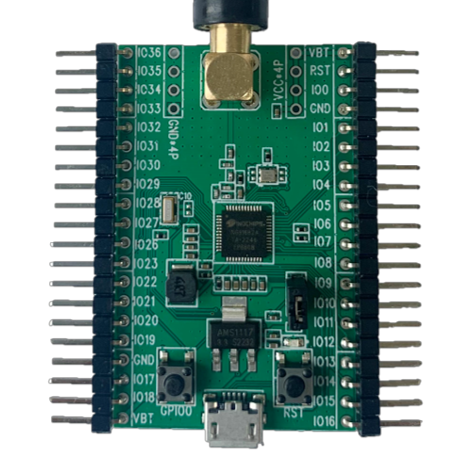
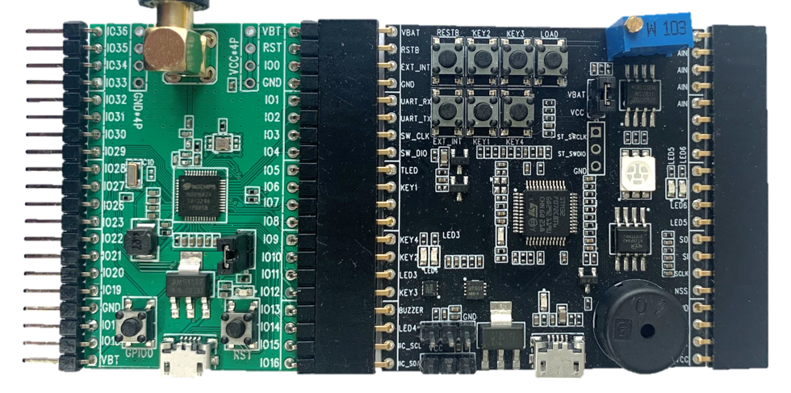
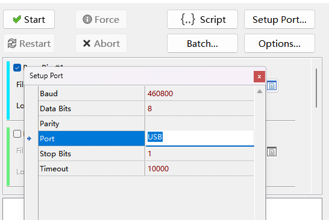
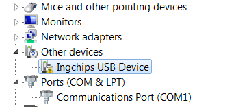
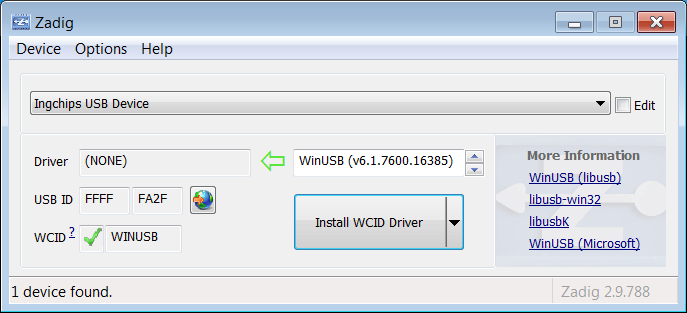
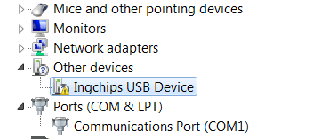
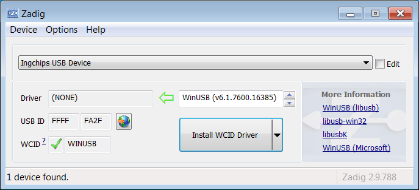

1、概述
该文档主要介绍桃芯科技 DB682AC1A 核心板的硬件资源及其使用方法。
本核心板包含主芯片 ING91682A，所有 IO 全部引出，内置 USB 接口。

2、使用说明
核心板有两种使用方式。
2.1 与扩展板组合使用
与扩展板组合使用时，主芯片可使用扩展板上的硬件资源，程序下载、调试串口功能等也由扩展板提供。 具体使用方法请参考扩展板使用说明。

2.2 单独使用
短接主芯片旁边的跳线帽，则主芯片由 USB 供电，否则由 VBAT、GND 管脚供电。
此时需要外接调试器或者串口工具。涉及管脚如下表。
| 管脚丝印 | 说明 |
|---|---|
| IO0 | 下载模式控制：从复位状态退出时，如果此管脚为高电平，进入下载模式 |
| IO1 | 串口下载时的 UART_TX |
| IO2 | 串口下载时的 UART_RX |
| IO3 | 复位后 SWD 接口的 CLK |
| IO4 | 复位后 SWD 接口的 DIO |
| IO15 | 下载模式选择：从复位状态退出时，如果此管脚和 IO0 同为高电平，进入 USB + 串口下载模式；如果只有 IO0 为高电平，则进入串口下载模式 |
3.3 功耗测试
测试芯片功耗时需要拔出主芯片旁边的跳线帽。
3、烧写程序
3.1 与扩展板组合使用
烧写方法请参考扩展板使用说明。
3.2 单独使用
3.2.1 使用串口烧写
将主机串口连接到 IO2/IO3，在 Flash Downloader 选择该串口。保持 IO0 为高电平（按下丝印为 GPIO0 的按键并保持）， 按下丝印为 RST 的按键再释放，芯片就会进入串口下载模式。
3.2.2 使用 USB 烧写
打开 Flash Downloader，点击 “Setup Port …”，在弹出的子窗口中将 Port 设置为 “USB”，点击 “OK”关闭子窗口。

将核心板 USB 连接到主机，保持 IO0 和 IO15 为高电平，按下丝印为 RST 的按键再释放，芯片就会进入 USB + 串口双下载模式， 既可以通过串口下载，也可以通过 USB 下载。点击“Start”即可通过 USB 完成下载。
Windows 7 兼容性：Windows 7 无法自动识别 USB Bootloader 并安装 WinUSB 驱动。

此时可使用 Zadig 手动安装 WinUSB 驱动，如图点击“Install WCID Driver”即可。


此时可使用 Zadig 手动安装 WinUSB 驱动，如图点击“Install WCID Driver”即可。
